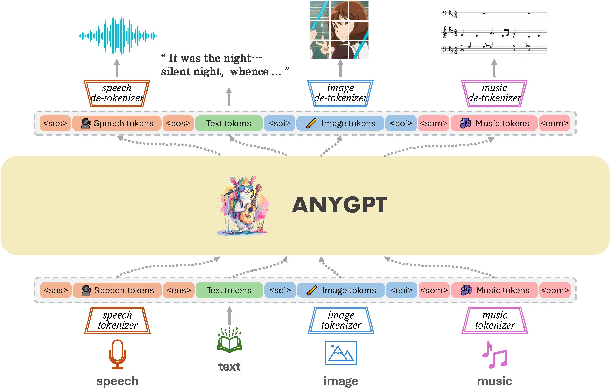
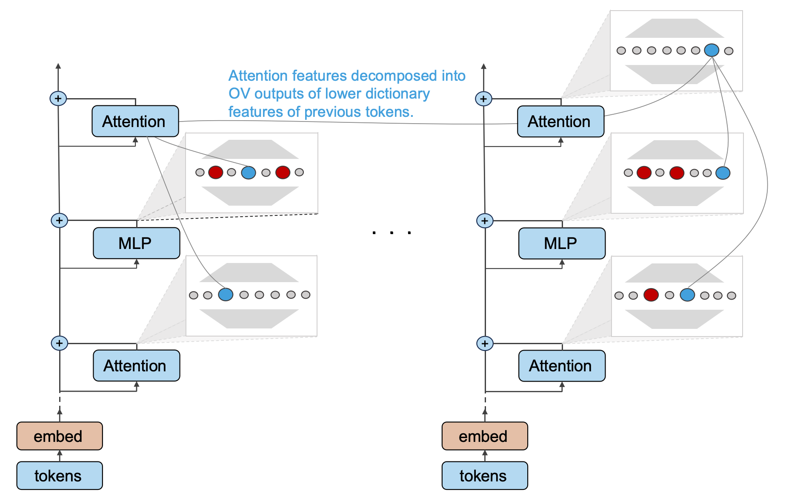

模型发布、技术报告、开源项目和研究札记。这里记录 OpenMOSS 团队在开放 AI 研究中的最新进展。
OpenMOSS Team
提出“用视频思考”范式：让视频生成模型把动态过程展开为可读取的视频帧，并在 VideoThinkBench 上评估视觉与文本推理能力。
提出“社区反馈强化学习”(RLCF)：从引用等科研社区反馈中训练 Scientific Judge 与 Scientific Thinker，让 AI 学会判断并构思高影响力研究想法。
可扩展的语音生成基座模型，支持零样本音色克隆、时长与发音控制、流畅中英混说与长语音生成。
开源视频-音频联合生成模型，可同步生成高质量画面与声音，覆盖唇形同步语音、环境音效和内容匹配的音乐。
MOSS-TTSD是一个口语对话语音生成模型，实现了中英双语的高表现力对话语音生成，支持零样本多说话人音色克隆，声音事件控制以及长语音生成。
SpeechGPT 2.0-preview 是我们在迈向情景智能推出的第一个拟人化实时交互系统。基于在百万级高质量语音数据上训练的端到端语音大模型。
Jiasheng Ye
训练数据配比对语言模型的表现的影响可以被定量预测，我们可以利用这一预测指导数据配比选择，比如在预训练中优化模型性能，或在继续预训练中避免灾难性遗忘。

詹俊
基于原始的GPT结构和多模态离散化表示，AnyGPT统一了文本、语音、图像、音乐四种模态，并实现任意模态组合的相互转换。
Shimin Li
在社会准则不断演化的环境中，与社会对齐良好的智能体将得以保留并演化出更适配环境的后代，而对齐不好的智能体则逐渐消亡并被淘汰。
Qinyuan Cheng
我们能否通过对齐的方式让基于语言模型的人工智能助手知道自己不知道什么，并使用语言表达出来，以此增强人工智能助手在实际应用中的真实性。

Zhengfu He
若字典学习可以提取Transformer中有意义的特征，我们能否据此逆向出Transformer内部的（几乎）所有回路？
没有找到匹配的文章。